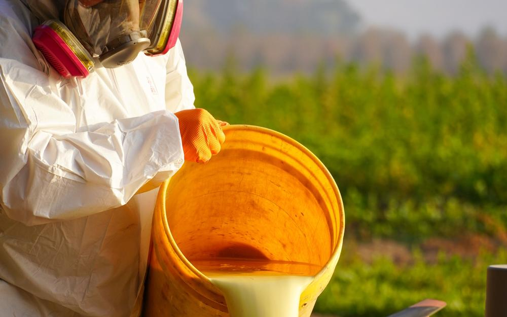
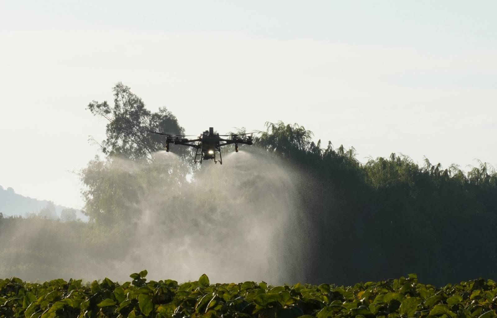
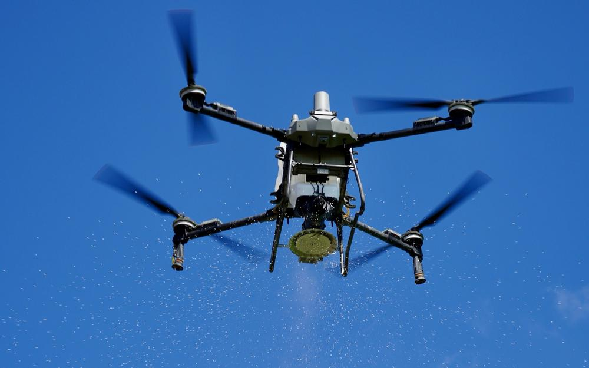
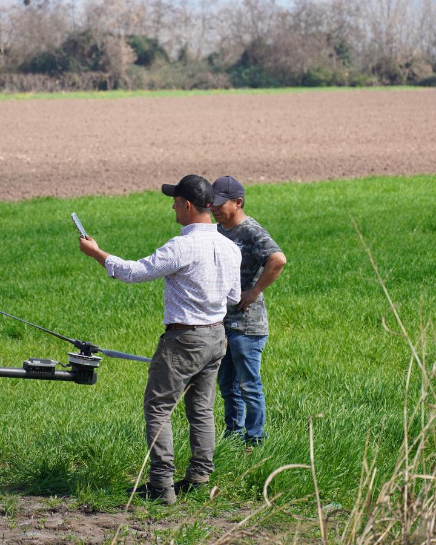
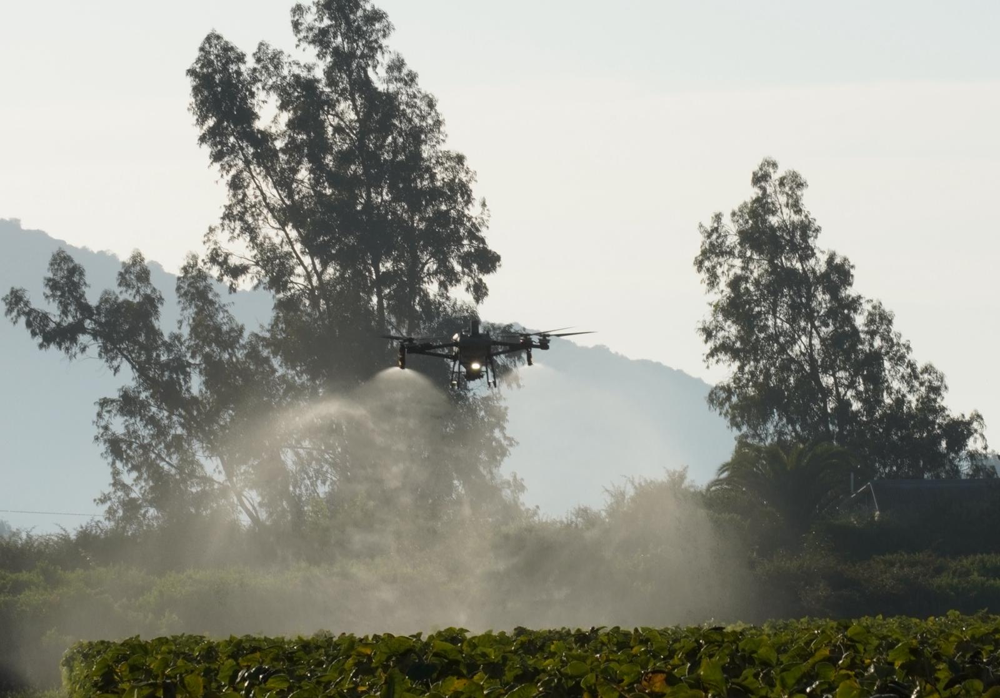
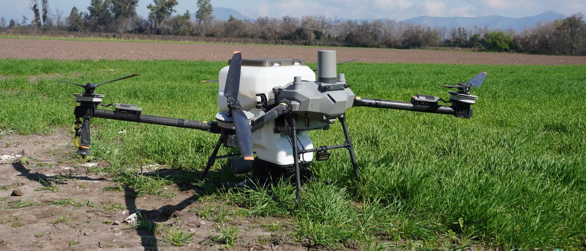
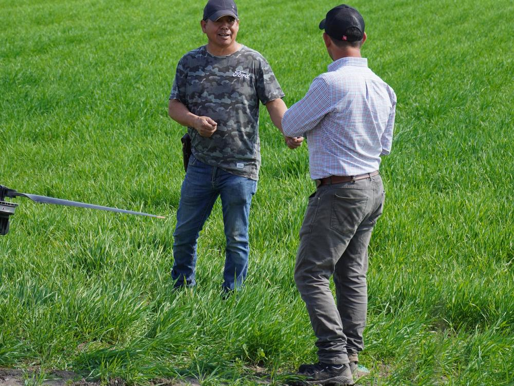

Aspersión de líquidos
Fungicidas, insecticidas, herbicidas, fertilizantes foliares y bioestimulantes, con cobertura uniforme y penetración en la canopia.
- Frutales
- Cereales
- Hortalizas
- Semilleros

Región Metropolitana · O'Higgins
Aplicamos fitosanitarios, fertilizantes y semillas con drones DJI Agras. Verificamos la cobertura con papel hidrosensible y te entregamos un informe técnico de cada aplicación.
Servicios
El flujo de aire del dron empuja el producto dentro del follaje. Usas menos agua, no compactas el suelo y entras al potrero aunque esté húmedo.

Fungicidas, insecticidas, herbicidas, fertilizantes foliares y bioestimulantes, con cobertura uniforme y penetración en la canopia.

Fertilizantes granulados, mezclas nutricionales y semillas, con dosis controlada por hectárea y sin dañar el cultivo establecido.
Cómo trabajamos

Definimos producto, dosis, mojamiento y horario según el cultivo y el clima.
Ruta programada en el control del Agras, con registro de vuelos y tiempos.
Papel hidrosensible en el follaje: impactos por cm² y tamaño de gota.
Productos, dosis, condiciones, cuarteles y análisis de gotas, el mismo día.

Cada gota cuenta, y la medimos
Mira cómo es el informe ↓Respaldo técnico
Recibes un informe con tu marca de campo: qué se aplicó, cuánto, cuándo y con qué cobertura. Sirve para tu registro, para auditorías y para comparar temporadas.
Datos de ejemplo. Cada informe se genera con los datos reales de la aplicación.
Equipos

Máxima capacidad para grandes superficies y follajes densos. Radar y visión omnidireccional para esquivar obstáculos.
Versátil para frutales, semilleros y cuarteles irregulares. Radar en fase activa y seguimiento preciso del terreno.
Confían en nosotros
@dronerancoReel · septiembre 2026Acción, precisión y cobertura en tiempo real. En cada vuelo combinamos tecnología aérea con criterio agronómico.
Ver en Instagram →
@dronerancoSeptiembre 2026Pulverización de líquidos de alto rendimiento: protección fitosanitaria rápida, con buena gota y penetración en el follaje.
Ver en Instagram →
@dronerancoSeptiembre 2026Cerca del agricultor, directo en el terreno: definimos junto a ti la dosis y la estrategia para cada vuelo.
Ver en Instagram →
Cotizar
Completa los datos y se abrirá WhatsApp con el mensaje listo para enviar. Te respondemos con una propuesta.
